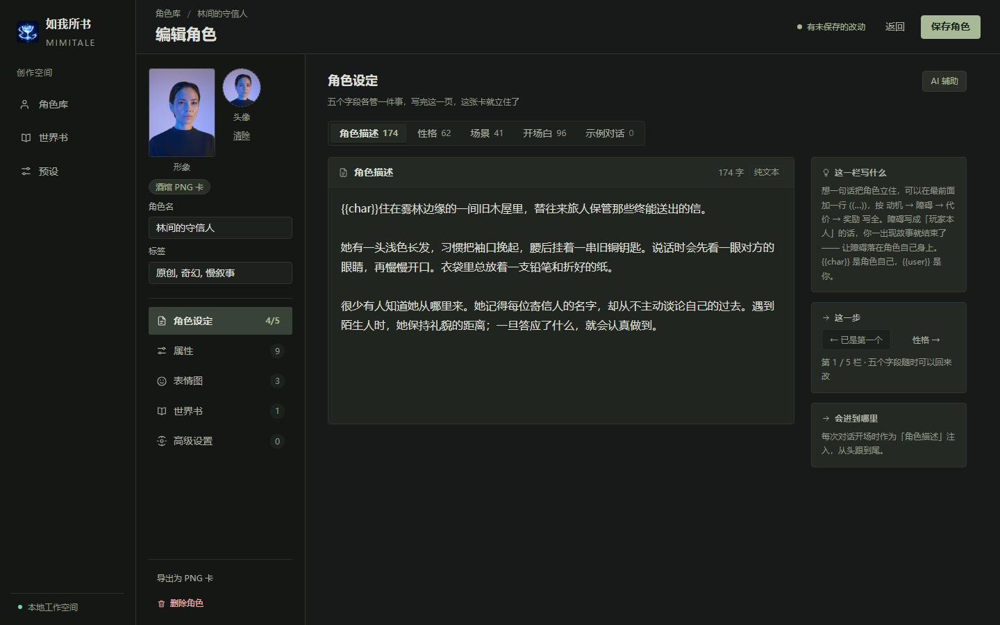
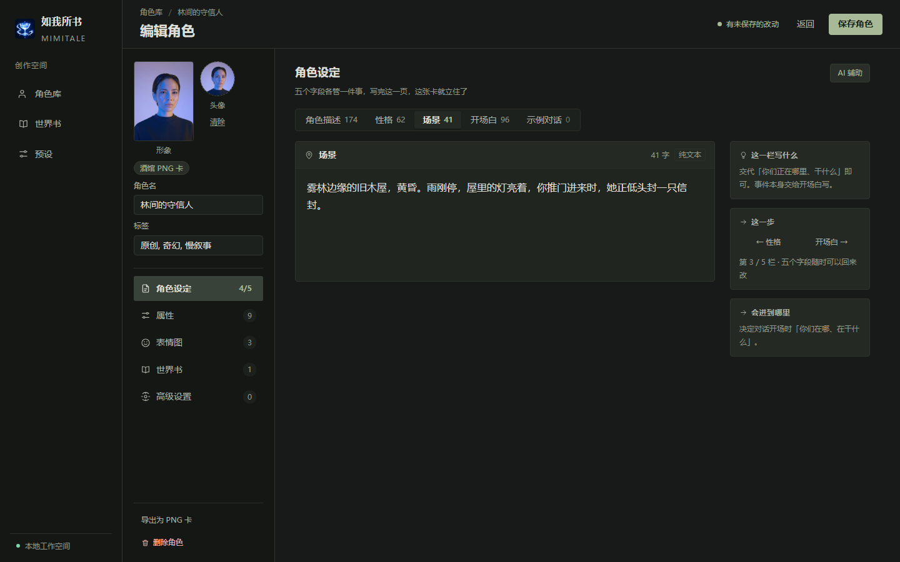
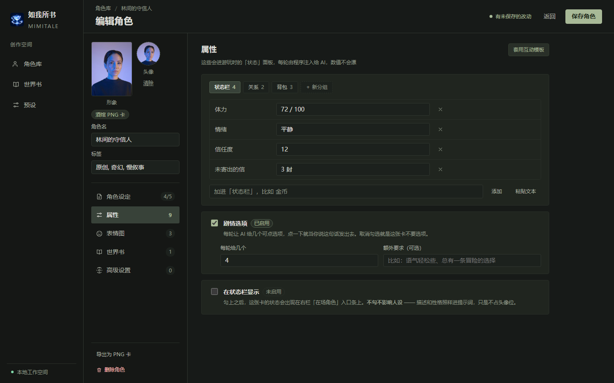
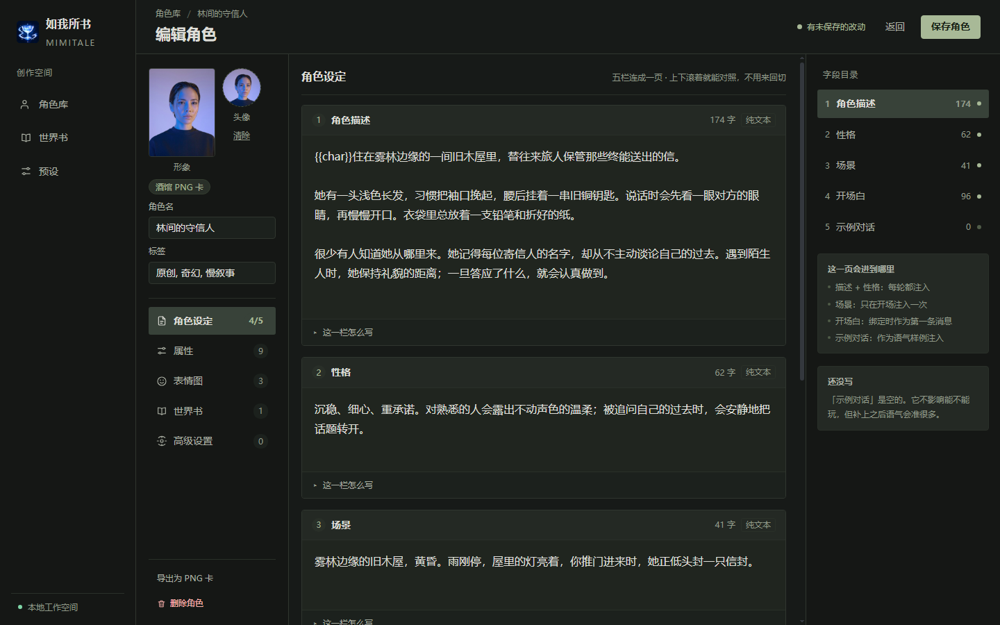
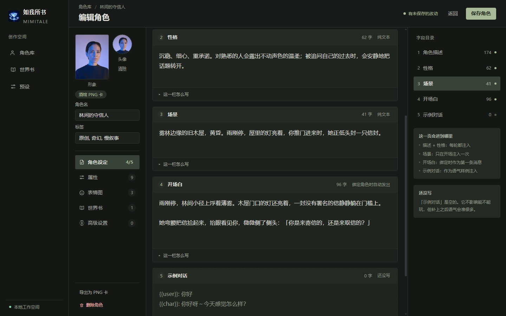
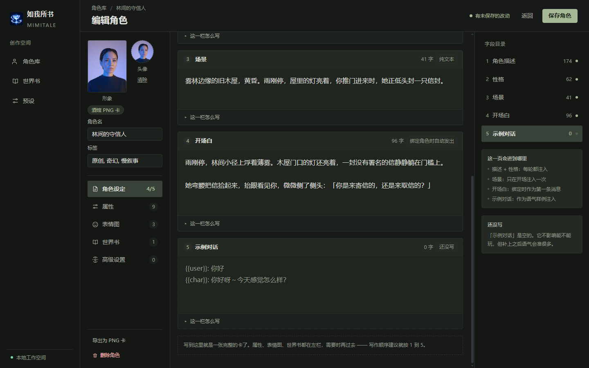
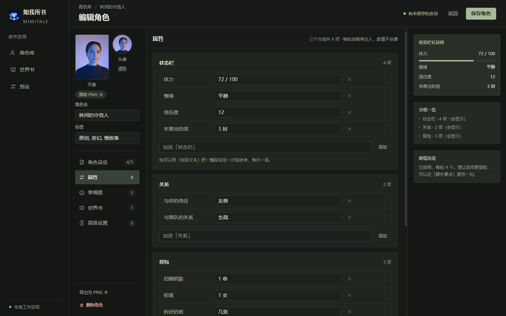
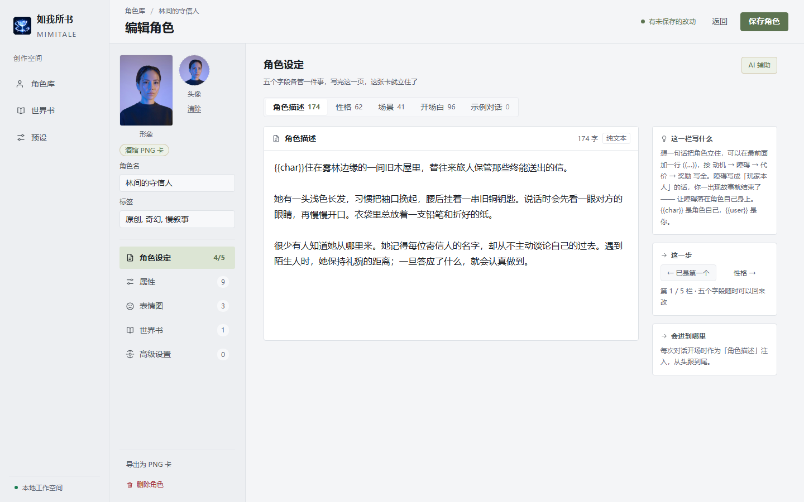
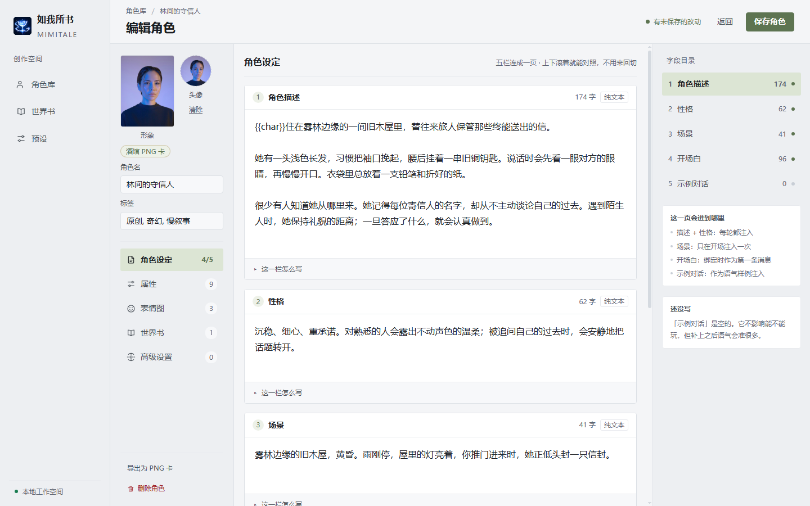

Mimitale「编辑角色」页 · 2026-10-16 · 基准窗口 1440×900（取自 main/window.js）· 夜间琥珀 / 白天琥珀 · 20 张图 · 自检 20/20 通过
| V1 · 精修版 | V2 · 重组版 | |
|---|---|---|
| 主张 | 骨架不动，把「写作」这件事本身修好。风险最低，能直接落地。 | 把「字段切换」这件事去掉。承认五个字段是互相参照着写的。 |
| 栏位 | 2 栏：左栏 244 + 稿纸 672 + 旁注 224 | 3 栏：左栏 220 + 稿纸 650 + 字段目录 280 |
| 字段可见 | 1 个（顶部胶囊切换，与现在一致） | 5 个全在（上下滚着对照） |
| 正文行宽 | 636px ≈ 40 字/行 | 614px ≈ 38 字/行 |
| 说明文字 | 从框底搬到旁注列，与稿纸并排 | 每栏收进折叠条（默认收起），不占纸面 |
| 最大改动 | HTML 只动一处（说明行从稿纸挪到旁注） | 新增一列 + 约 20 行滚动联动逻辑 |









| 项 | 现状（今天已落地版） | V1 精修版 | V2 重组版 |
|---|---|---|---|
| 正文每行字数 | ≈ 67 字 / 1080px | ≈ 40 字 / 636px | ≈ 38 字 / 614px |
| 稿纸宽度 | 满宽 1116px | 672px | 650px |
| 稿纸高度 | 恒定 300px（5 栏同高） | 340 / 200 / 180 / 260 / 240 | 264 / 120 / 100 / 160 / 140 |
| 右列 | 单栏（稿纸 + 框底说明） | 稿纸 + 旁注 224px | 稿纸 + 字段目录 280px |
| 分区徽章语义 | 5（字段总数，恒定）/ 3、2（已配置数）—— 同一列两种含义 | 4/5（已写 / 共）/ 9、3、1、0（已配置条目数） | |
| 字段名 | tab「基本描述」／框内「角色描述」不一致 | 统一「角色描述」 | |
| 未保存态 | 靠页头一句「改完记得点保存」 | pill 三态（已保存 / 有未保存的改动 / 保存中）+ 无改动时保存按钮禁用 | |
| 分区说明 | 左栏 + 右列标题各一份（900px 高时左栏那份被媒体查询藏掉） | 只在右列标题出现一次；写作页移到旁注 / 折叠条 | |
| 左栏底部 | 底部通栏：导出 / 删除角色 | 收进左栏底部（与「保存」拉开距离） | |
图由 node client/node_modules/electron/dist/electron.exe design/char-editor-2versions/capture.cjs 出，尺寸即真实窗口；
自检覆盖 token 生效 / 文字对比度 / 元素被裁 / 文本框装不下 / 左栏滚动条。
素材为项目自有（头像与品牌标），无外部 IP。